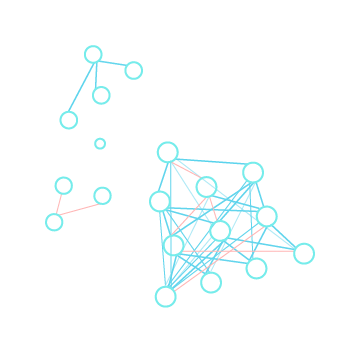
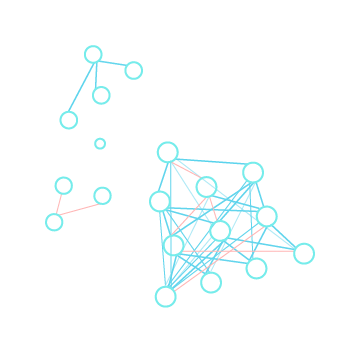
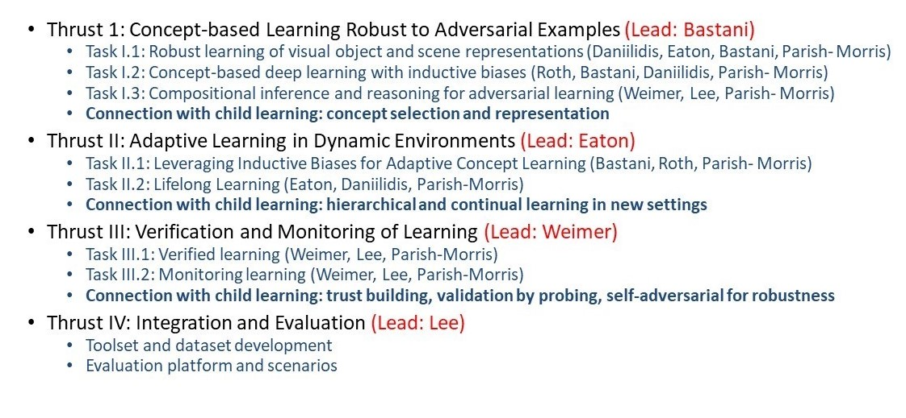
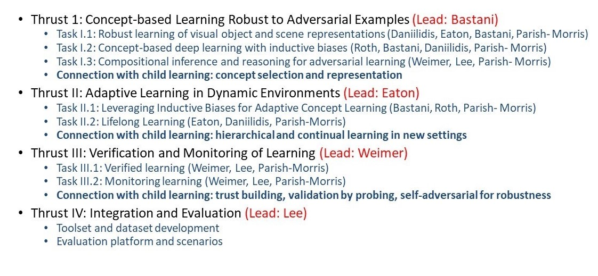

 

This research project addresses the design and analysis of robust and adaptive machine learning based on how children learn. Learning systems are vulnerable to adversarial inputs that are malicious (e.g., image tampering) and non-malicious (e.g., dynamic environments). Moreover, these adversarial inputs can affect the learning systems at design-time (i.e., in the training data) and runtime (i.e., in the test data). Providing predictive analytics that deliver intelligent services in an adversarial setting requires cross-thrust research addressing fundamental adversarial learning challenges. First, modern machine learning generally lack adversarial robustness, both at design-time and run-time, where state-of-the-art approaches tend to perform substantially worse in the presence of adversarial examples such as sensor noise (e.g., dust on the camera lens), image transformations (e.g., translations, rotations, and scaling), and distribution shifts (e.g., daytime images to nighttime images). Second, concepts learned by both children and learning systems must be robust to adversarial examples in real, large-scale dynamic environments, requiring new concepts built upon previous knowledge. However, achieving this improved robustness requires increased reliance on prior concepts (e.g., relational models, causal models, and shapes) that may also be susceptible to changes in the environment. Third, safety critical autonomous systems require verifying and monitoring the robustness of concept- based learning, which is challenging in dynamically evolving systems based on the sensed environment.
In this project, we aim to develop the foundations for robust and adaptive learning based on childhood development consisting of three research thrusts: (Thrust I) Concept-based Learning Robust to Adversarial Examples; (Thrust II) Adaptive Learning in Dynamic Environments; and (Thrust III) Verification and Monitoring of Learning.